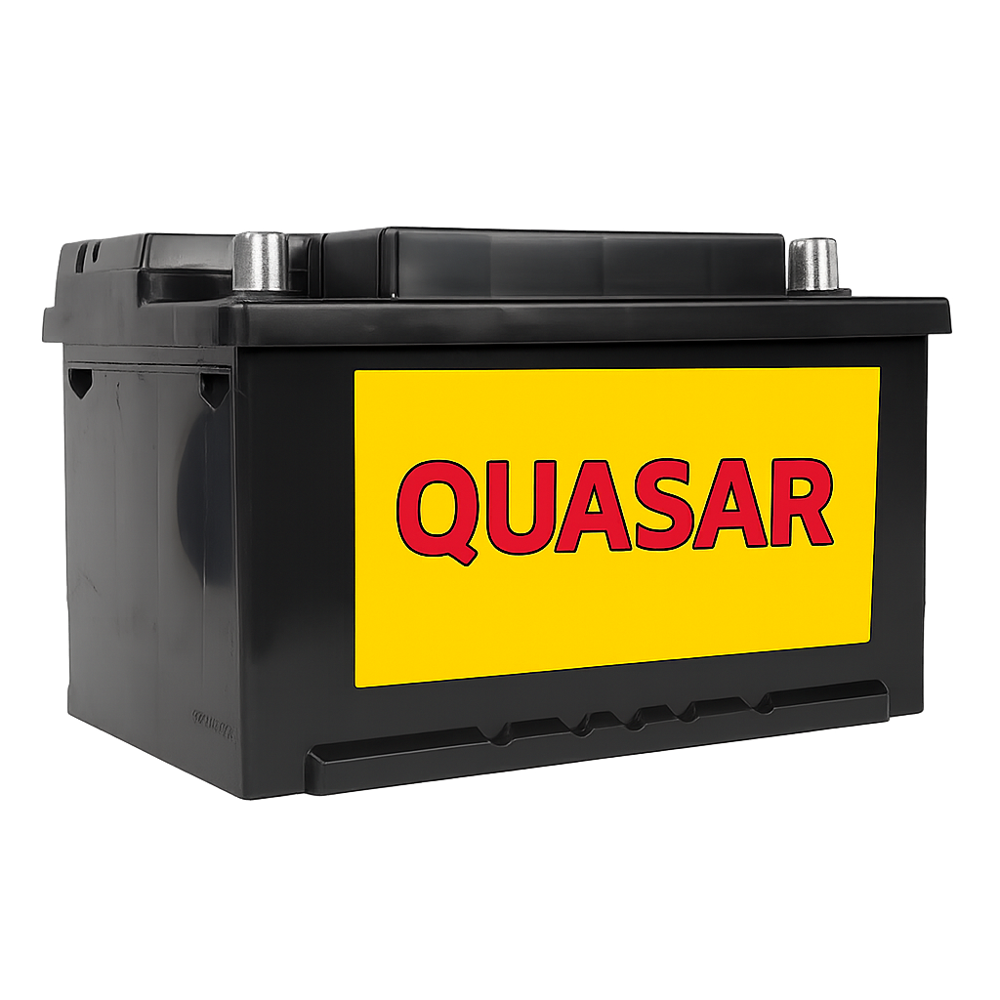

Sobre nosotros
En Baterías Quasar producimos nuestra propia línea de baterías confiables y de alta duración, pensadas para que tu vehículo nunca se detenga. También contamos con baterías de la reconocida marca Moura, siempre con garantía y calidad asegurada.
